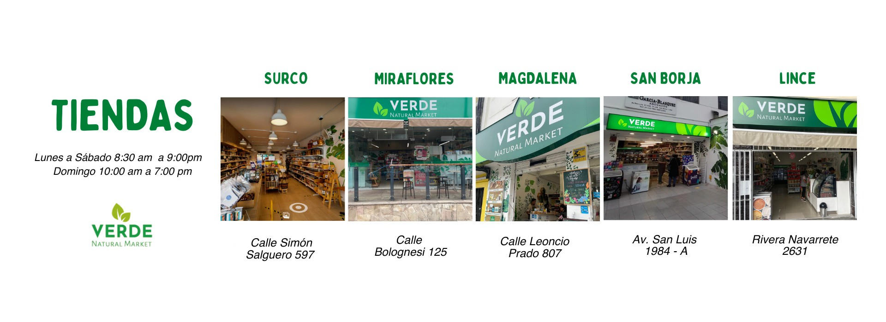

Somos una empresa dedicada a la elaboración de una gran variedad de estilos de productos que satisfaga la necesidad del cliente aventurero y exigente. Ofrecemos productos de calidad sobre la competencia y brindamos una excelente atención a los clientes. Para el 2025 a ser la empresa líder de la Región, en la elaboración de productos naturales y de sus distintos sabores mediante la constante innovación, procesos y servicios que marquen la pauta creciendo rentablemente y logrando mayor desarrollo y bienestar para nuestros accionistas, trabajadores y clientes.
